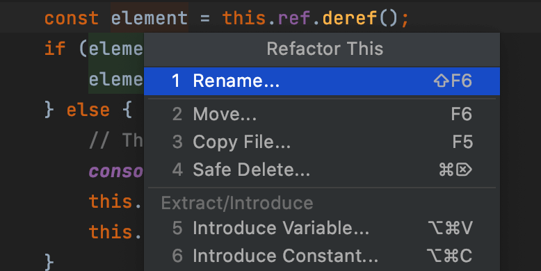

WebStorm is an integrated development environment for JavaScript
and related technologies. Like other JetBrains IDEs, it makes your
development experience more enjoyable, automating routine work
and helping you handle complex tasks with ease.
Write more reliable and maintainable code, with the IDE
unning dozens of code inspections as you type and
detecting potential problems. Refactor your entire
codebase in a few clicks and don’t miss anything when
implementing large structural changes.
Get straight to coding with everything you need for
JavaScript development available out of the box. Be more
productive and focus on more creative tasks while
WebStorm takes care of all the routine work for you.
Afraid of messing something up with Git and losing
important changes? Or breaking something when
renaming a component across your entire project?
WebStorm will simplify these and other challenging
tasks so you can focus on the big picture.

Looking for a tool you can trust for even the
trickiest parts of your JavaScript development?
We’ve been refining WebStorm for over 10 years
to make coding a more enjoyable experience.
Whether you work with JS, TS, React, Vue,
Angular, Node.js, HTML, or style sheets,
WebStorm has you covered.

WebStorm deeply understands your project
structure and can assist you with every aspect of
writing code. It will autocomplete your code,
detect and suggest fixes for errors and
redundancies, and help you refactor code safely.

One of the best parts of working in an IDE is that
all of your essential tools are available in one
place. Use WebStorm to debug and test your
client-side and Node.js apps as well as to work
with version control. Take advantage of the
linters, build tools, terminal, and HTTP client,
which are all integrated with the IDE.

Move through your code faster, regardless of
how large your projects are. Look for files,
classes, or symbols, and review all the matches in
one place. Jump to the definition for any
function, method, variable, component, or class,
and find its usages in a few clicks.

Onboard new teammates faster with all key
functionality prepackaged. Code together in real
time and talk to others right from the IDE. Share
your project configuration, including code style
settings, and work efficiently with Git and
GitHub.
Want to extend the built-in functionality? Tailor
WebStorm’s look and feel to your liking by
experimenting with things like themes and
plugins. Save your custom settings and share
them between different instances of WebStorm.